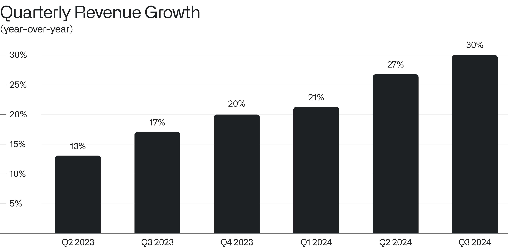
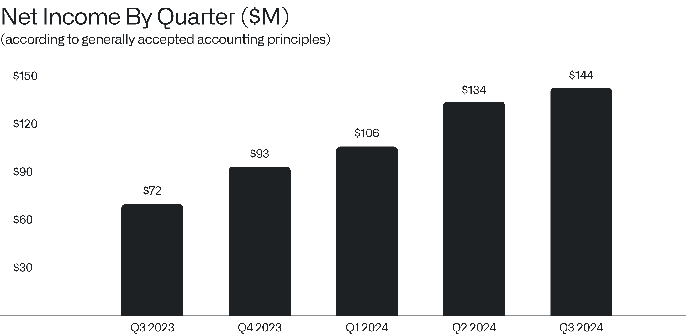
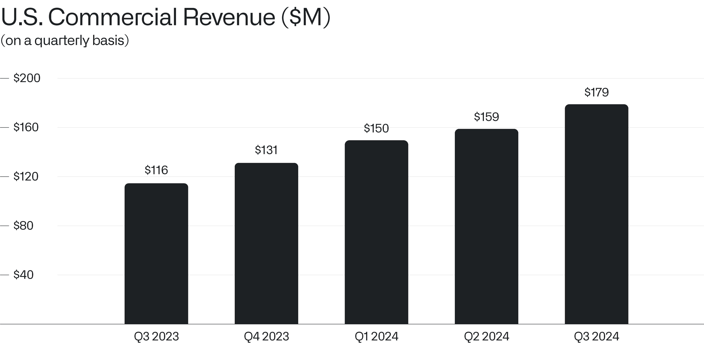

致股东的信
2024年11月4日

I.
这仍然只是一个开始。
我们的业务增长正在加速，随着我们满足美国政府及商业客户对最先进人工智能技术坚定不移的需求，我们的财务表现正超出预期。
世界正处于一场由美国推动的AI革命之中，这场革命正在重塑各个行业和经济体，而我们正处于其中心。
上季度我们的收入达到创纪录的7.26亿美元，同比增长30%，我们的业务仍在快速扩张。
我们的收入同比增长率在过去六个季度持续攀升，从2023年第二季度的13%上升到2024年第三季度的30%。这一攀升是我们始终相信可以实现并为之付出了巨大努力才达成的。

一个强大的力量正在崛起。这是软件的世纪，我们志在赢得整个市场。
我们业务的不懈前进，源于我们早在数十年前就对技术基础设施进行的投资，而正是这些基础设施如今使重塑了我们世界的大语言模型对大型企业变得有用且有价值。
我们还成为了标普500指数的成分股——一个大多数人曾认为遥不可及的目标。而市场中的许多人在最不该放弃的时刻离开了我们，失去了希望。
该指数由美国乃至全世界最盈利、最重要的企业组成，我们能够进入该指数，得益于我们业务的实力以及对我们的软件不断扩大的需求。
在2024年第三季度，我们创造了公司二十年历史上最高的利润，净利润达到1.44亿美元。

而且我们对任何可能出现的情况都做好了准备。
截至2024年9月30日的过去十二个月，我们的调整后自由现金流首次突破10亿美元，使我们的现金、现金等价物及有价证券储备达到46亿美元。
二、
美国市场仍然是我们业务的核心。
在这里，我们看到各机构对人工智能的前景响应最为迅速，各公司和政府机构竞相部署必要的技术基础设施，以在其专有的、最具价值的数据集上释放语言模型的力量。
而我们最新平台AIP的发布彻底改变了我们的业务。
第三季度我们在美国商业和政府市场的收入合计达到4.99亿美元，同比增长44%。
随着客户拥抱AI，美国政府业务的增长正在迅猛加速。该市场（包括国防和情报机构）的收入在截至2024年9月30日的三个月内同比增长40%、环比增长15%，达到3.2亿美元。
同期，我们在美国商业市场的收入同比增长54%、环比增长13%，达到1.79亿美元。

正是美国各机构采用我们的平台以及更广泛的人工智能能力的速度，一直是、并且我们相信将继续是我们增长的驱动力。
当美国再次奋勇向前时，我们在欧洲的盟友和伙伴却正被甩在身后。在这个经济史上的关键时刻，他们的私营和国家机构袖手旁观，而美国企业不断的创新正在颠覆和重塑全球产业。欧洲必须适应AI带来的机遇与挑战，否则将面临毁灭的风险。
三、
美国企业对冒险与创新的投入在世界上无与伦比。我们相信，在美国拥抱AI所带来的回报将是巨大的，无论是从人类解放还是经济繁荣的角度来看。
在这个独特的时刻，美国的影响力不仅来自于对AI供应的掌控，还来自于在我们最杰出的企业和机构中战略性地部署最新技术的能力。我们无可匹敌的能力——引导和疏导将AI与关键数据、分发和决策结构无缝集成的需求——才是真正让我们与众不同的地方。
然而，当今时代的浅薄消费主义有可能削弱我们作为一个文化和文明的雄心。
我们创建这家公司是为了武装和捍卫我们最重要的机构，而不是在边缘小打小闹，制造无聊、颓废的消遣。
正是因为——而非尽管——这份雄心、这种使命感，以及参与一个比我们自己更宏大的故事的渴望，我们才走到了这一刻。
此致，

Alexander C. Karp
首席执行官兼联合创始人
Palantir Technologies Inc.
前瞻性声明
本函包含《1995年私人证券诉讼改革法》“安全港”条款所界定的“前瞻性陈述”，包括但不限于有关我们的财务展望、产品开发及相关时间安排、分销和定价、我们软件平台的预期效益和应用、业务战略和计划（包括与我们的 Artificial Intelligence Platform（“AIP”）相关的战略和计划、销售和营销工作、销售团队、合作伙伴关系和客户）、对我们业务的投资、市场趋势和市场规模、机遇（包括增长机遇）、我们对现有及潜在投资以及与各实体商业合同的预期、我们对宏观经济事件的预期、我们对市场指数潜在资格或纳入的预期、我们对股票回购计划的预期以及定位的陈述。这些前瞻性陈述是在首次发布之日作出的，基于当时的预期、估计、预测和推算以及管理层的信念和假设。“指引”、“预期”、“预计”、“应该”、“相信”、“希望”、“目标”、“预测”、“计划”、“目标”、“估计”、“潜在”、“预测”、“可能”、“将”、“或许”、“可以”、“打算”、“应”等词语以及这些词语的变体或否定形式和类似表述，旨在识别这些前瞻性陈述。前瞻性陈述受诸多风险和不确定性的影响，其中许多涉及超出我们控制范围的因素或情况。由于多种因素，我们的实际结果可能与前瞻性陈述中明示或暗示的结果存在重大差异，这些因素包括但不限于我们向美国证券交易委员会（“SEC”）提交的文件中详述的风险，包括我们截至2023年12月31日的财季和财年的10-K表格年度报告，以及我们可能不时向SEC提交的其他文件和报告，包括提供我们截至2024年9月30日财季收益新闻稿的8-K表格当前报告，以及我们截至2024年9月30日财季的10-Q表格季度报告。特别是，以下因素（除其他因素外）可能导致我们的结果与此类前瞻性陈述明示或暗示的结果存在重大差异：我们成功执行业务和增长战略的能力；我们的现金及现金等价物满足流动性需求的充足性；市场对我们平台、产品和服务总体上的需求；我们增加新客户数量及从客户获得收入的能力；我们实现客户合同全部或部分合同价值作为收入的能力，包括客户可获得的任何合同选择权或受便利终止条款约束的合同期限；我们漫长且不可预测的销售周期；我们成功执行渠道销售及与第三方其他战略举措的能力；我们保留和扩大客户群的能力；我们未来期间经营业绩和关键业务指标的季度波动；我们业务的季节性；我们平台的实施过程可能复杂且耗时；我们成功开发和部署新技术以满足现有或潜在客户需求的能力；我们使平台和产品更易于安装、消费和使用的能力；我们维护和提升品牌及声誉的能力；随着业务增长以及追求业务和财务目标，我们维护和提升企业文化的能力；有关我们的新闻或社交媒体报道，包括但不限于呈现或依赖不准确、误导性、不完整或具有其他损害性信息的报道；近期或未来的全球宏观经济和地缘政治事件（如持续的俄乌冲突和以色列冲突、美国及其他国家利率上升、货币政策变化和外汇波动）对我们公司或现有或潜在客户和合作伙伴的业务和运营的影响；在我们的平台中使用人工智能所引发的问题；以及对我们或客户或第三方数据的任何泄露或访问。
本信函中包含的前瞻性陈述仅代表我们在本信函发布之日的观点。我们预计后续事件和发展将导致我们的观点发生变化。我们不承担更新或修订任何前瞻性陈述的意图或义务，无论是基于新信息、未来事件还是其他原因。不应将本信函发布之日之后的任何日期的前瞻性陈述视为代表我们的观点。过往业绩并不必然预示未来结果。
其他说明
本信函可能包含某些非GAAP财务指标。我们对这些指标的定义可能与其他公司使用的定义不同，因此可比性可能有限。此外，其他公司可能不会发布这些或类似的指标。而且，这些指标存在一定的局限性，因为它们不包括我们合并经营报表中反映的某些费用的影响。因此，这些非GAAP财务指标应作为根据GAAP编制的指标的补充来考虑，而不能作为其替代品或孤立看待。我们通过提供这些非GAAP财务指标与最可比GAAP指标的调节表来弥补这些局限性，该调节表可在我们的投资者演示文稿和/或财报新闻稿中找到，这些材料可在我们的投资者关系网站（investors.palantir.com）上获取。我们鼓励投资者和其他人士完整地审阅我们的业务、经营业绩和财务信息，不要依赖任何单一财务指标，并将这些非GAAP财务指标与最直接可比的GAAP财务指标结合使用。
本函件可能包含基于独立行业出版物或其他公开信息以及基于我们内部来源的其他信息的统计数据、估算、预测和陈述。这些信息涉及许多假设和局限性，请您注意不要过分依赖这些估算。我们并未独立核实这些行业出版物和其他公开信息中所含数据的准确性或完整性。因此，我们不对该等数据的准确性或完整性作出任何陈述，也不承诺在本函件日期之后更新该等数据。
本信函在讨论我们的业务时可能提及各种增长率。除非另有说明，这些增长率反映的是同比比较。
收到本信函即表示您确认，您将自行负责对市场及我们的市场地位进行评估，并将自行开展分析，且全权负责就所提供的信息（包括关于我们业务潜在未来表现的信息）形成自己的观点。